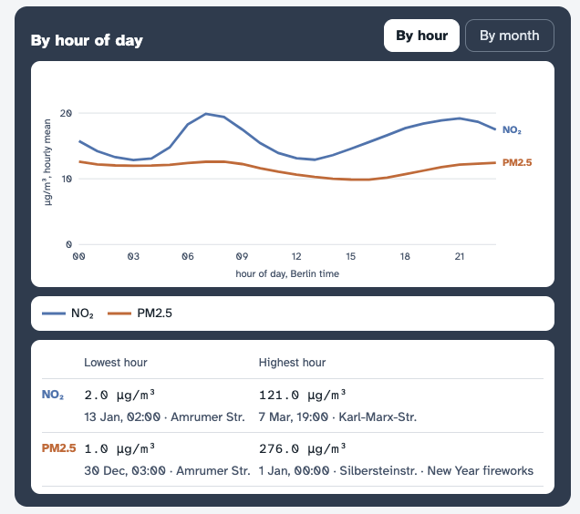
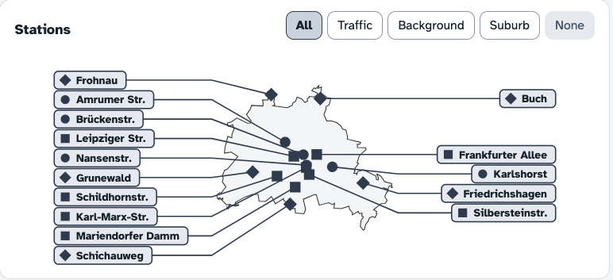
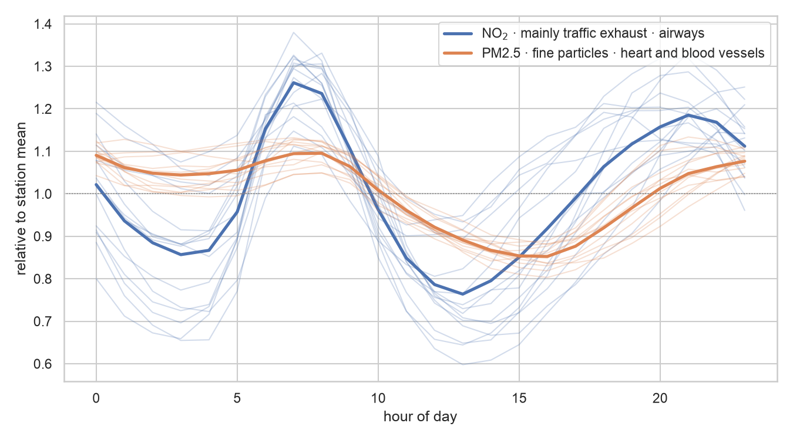
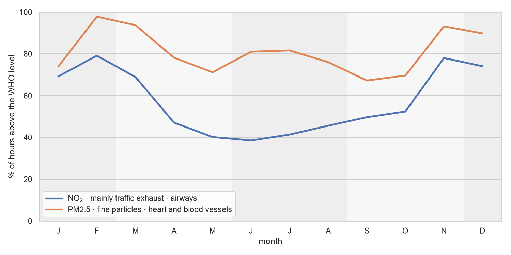
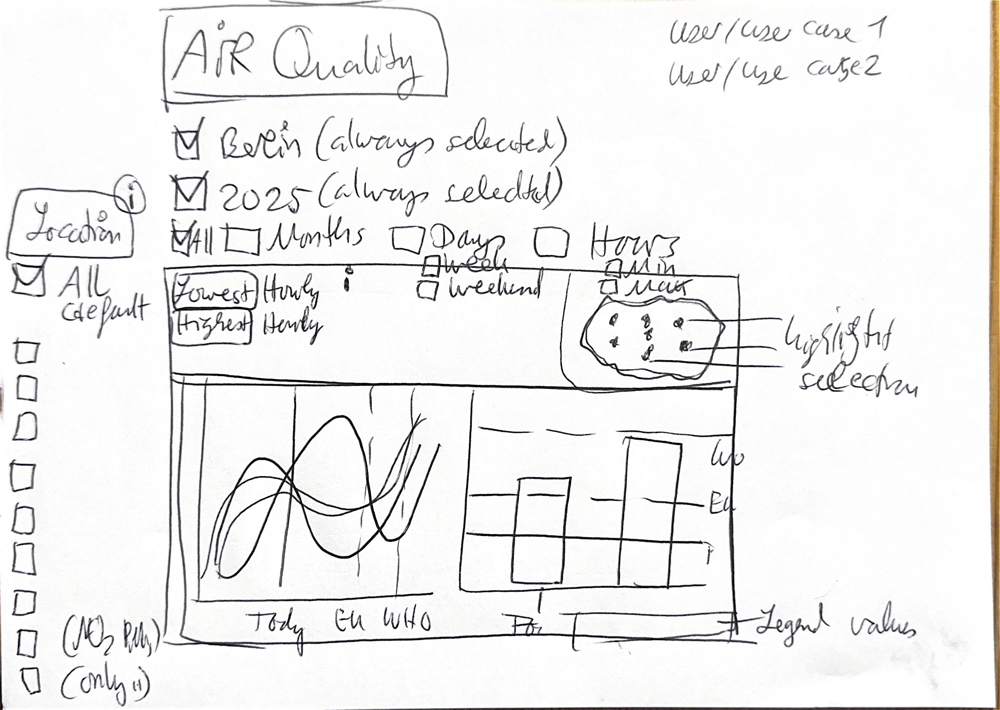
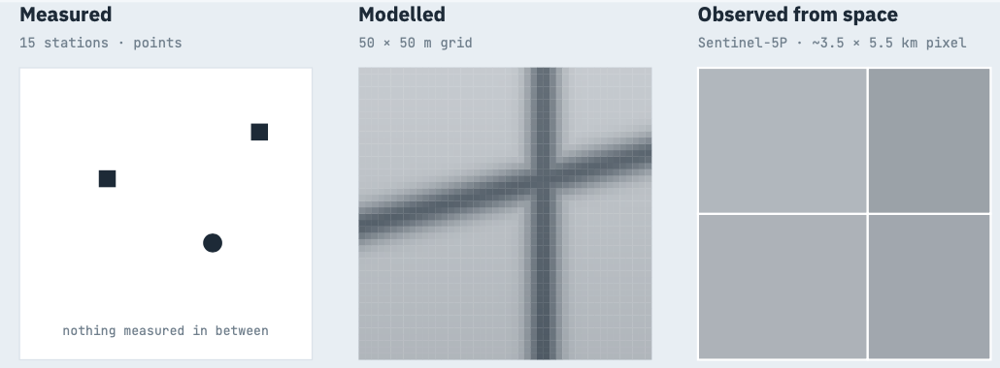

Impact
- 0 of 15stations above the EU limit in force
- 5 of 15above the EU 2030 limit
- 10 of 15above the WHO guideline
NO₂ annual mean 2025. Public sources usually show one unnamed limit. The interface shows all three.
Interface
Two inputs: time and stations. Both charts update from them.


- NO₂gas mainly from traffic
- PM2.5fine particles
- Square · circle · diamondtraffic · background · suburb
- Dotted line · dashed line · solid lineWHO · EU 2030 · EU in force
Before: city portal
- Open one station
- Find a report
- Look up the limit
- Compare stations by hand
After
- Choose time
- Choose stations
- Read all stations against three limits
Key decisions

- Shared selectionMap · list · chart share one selection.
- Labeled limitsDotted WHO · dashed EU 2030 · solid EU in force.
- Missing data labeledStations without a PM2.5 sensor show “not measured here”.
- Extremes with contextLowest and highest hour with date and station. New Year fireworks named as the cause.
15 stations for 892 km². Values per station only. No values per district.
Process
Data exploration
NO₂ peaks in the morning and evening rush hours. PM2.5 changes less over the day. A daily curve shows both. No hour selector needed.

Winter months have the most hours above the WHO level. PM2.5 is above it in most hours of every month.

Sketches


Iterations


- StationsBefore: names cut off in the sidebar. Now: labeled on the map.
- MapBefore: symbols without names. Now: map · list · chart share one selection.
- TimeBefore: hour range 00:00 to 23:00. Now: year or month · weekday or weekend.
- LimitsBefore: one limit at a time. Now: all three in the chart.
Next version · planned
Planned. Not built. Choose a district and compare three sources: measured stations · Berlin’s modeled grid · Sentinel-5P satellite data. Each layer would state resolution · date · share of valid data.

- Area firstPick a district. A summary would list what each source says there.
- One layer at a timeThe map would show one source. The comparison would happen in the summary.
- Resolution in the legendEach layer would state its cell or pixel size and its year.
- Edge cases to designNo station in the area · area smaller than one pixel · too few valid days · model year differs.
- Design system in FigmaTo build: tokens and components with their states. Map · legend · layer switcher · summary panel.
- ScopeAbout four weeks part time. Checkpoint after week two. Layers misaligned with the stations: continue in Figma only.
Known: station data and limits. To check first: format and licence of the model grid · Sentinel-5P coverage per month. No part of this version exists yet.
Lessons
- Exploration first
The charts showed which filters were useful.
- Charts as a draft
Colors · line styles · sort order came from the exploration charts.
- AI with a narrow scope
Useful for research and code after the design decisions were fixed.